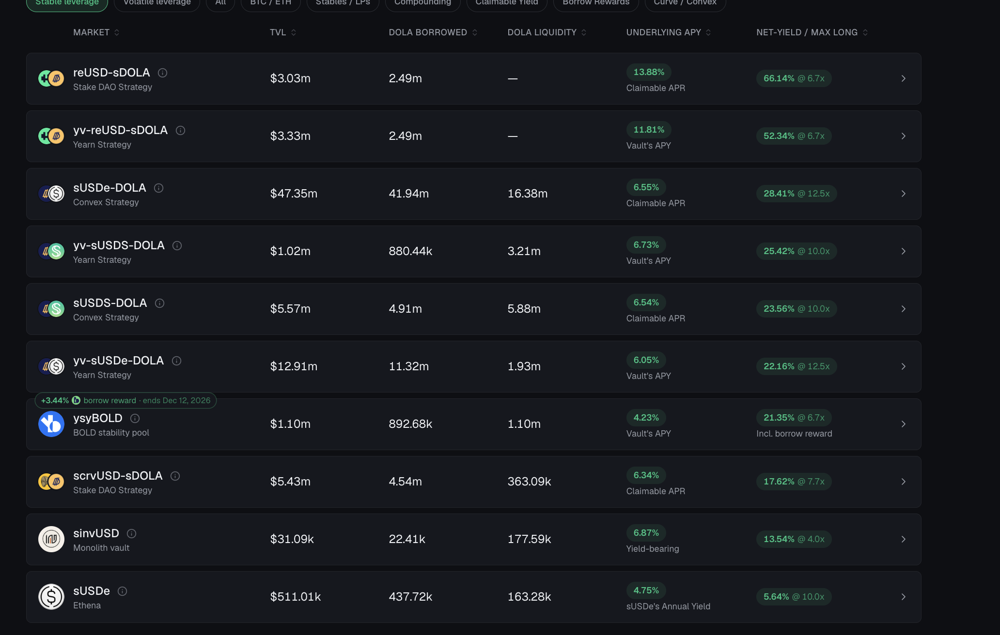

FiRM market making benchmark
FiRM is a relevant production comparator for borrowing against LP collateral containing its own issued asset. The project owner supplied a market-dashboard screenshot and an aggregate estimate on 21 October 2026. This benchmark preserves that calculation and distinguishes displayed figures from assumed portfolio composition. It is not an independently reconstructed onchain reserve audit.
Owner supplied aggregate calculation
| Input | Value | Interpretation |
|---|---|---|
| Borrowing in market-making markets | $68.57m | Reported as 96% of total debt |
| Aggregate TVL | $89.65m | Owner supplied total collateral TVL |
| Share assigned to LP collateral | 96% | Proxy using the reported debt share; not a measured TVL share |
| DOLA composition of LP collateral | 75% | Assumed value-weighted recoverable DOLA-equivalent share |
Estimated LP collateral = $89.65m * 96% = $86.064m
Estimated locked DOLA = $86.064m * 75% = $64.548m
Residual debt = $68.57m - $64.548m = $4.022m
Gross LP debt / estimated residual debt = 17.0487 times
The $4.022m is estimated debt remaining after netting recoverable own-token collateral. It is not a measurement of initial treasury capital, external quote reserves, or borrower equity. Under these same assumptions, the external LP component is $21.516m, collateral equity is $17.494m, and residual debt divided by external LP collateral is about 18.69%.
A debt share does not establish an equal share of TVL. Using 96% to allocate TVL is explicit here so the result can be replicated or replaced when actual collateral-by-market totals and underlying pool balances are available. The 75% composition must include wrapper exchange rates, eligibility, custody, and recovery costs, not merely displayed token labels.
Matched rows visible in the screenshot
| LP collateral market | Displayed TVL | Displayed DOLA borrowed |
|---|---|---|
| reUSD-sDOLA | $3.03m | $2.49m |
| yv-reUSD-sDOLA | $3.33m | $2.49m |
| sUSDe-DOLA | $47.35m | $41.94m |
| yv-sUSDS-DOLA | $1.02m | $0.88044m |
| sUSDS-DOLA | $5.57m | $4.91m |
| yv-sUSDe-DOLA | $12.91m | $11.32m |
| scrvUSD-sDOLA | $5.43m | $4.54m |
| Visible LP total | $78.64m | $68.57044m |
The displayed LP rows support approximately $68.57m of LP-backed borrowing and an aggregate displayed debt-to-TVL ratio of 87.20%, close to the Tomax research assumption of 87.4% actual LP LTV. TVL and market values are rounded dashboard values and may not equal the protocol's conservative borrowing-power valuation.
As a separate matched-row sensitivity, applying the same assumed 75% DOLA composition to the visible $78.64m LP TVL gives $58.98m own-token collateral, $19.66m external collateral, and $9.59044m residual debt. This is a different estimate because it uses the visible LP rows rather than allocating total TVL by debt share. Neither estimate directly measures the physical underlying assets.
Relevance to Tomax
The comparator supports evaluating own-token LP collateral and debt netting as practical mechanisms. The current Tomax scenario uses the requested 96% LP / 4% ETH mix, with the earlier 90% / 10% case retained for comparison. It does not establish a 17-times debt-to-seed multiplier: the denominator in the owner's calculation is residual debt, while the simulation's denominator is initial liquidity.
FiRM's dollar-denominated LPs, external quote assets, AMM designs, user demand, accrued yield, and valuation rules differ from local-currency assets requiring moving FX ranges. Compare gross debt, recoverable own tokens, external collateral, net debt, backstop commitments, and executable exit depth on consistent dates and units.
The screenshot's DOLA liquidity column is not used as external quote reserves or guaranteed AMM sell capacity. Its yield and leverage advertisements are not Tomax return assumptions. The reported 96% debt concentration needs an all-market debt denominator from the same observation time; that denominator is not visible in the supplied crop.

Primary context: FiRM markets, FiRM positions, and the DOLA transparency dashboard. These live pages may change and do not independently establish the supplied aggregate inputs.